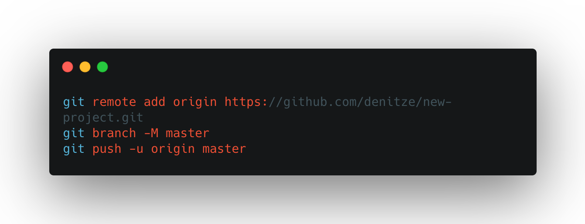

Die wichtigsten Git-Befehle auf einen Blick
1: Lokales Git-Repository erstellen
Alle vorhandenen Dateien inkl. Unterverzeichnisse zum Stage hinzufügen
Commit mit Dateien aus dem Stage erstellen
2: Remote Repository erstellen
Gehe auf Github.com

Zum Pushen auf Github zum Terminal hinzufügen
Sobald einmal gepushed wurde, ist zum pushen nur noch ein "git push" nötig.
"git add . -> git commit -m "file changed" -> git push"3: Branches
Neue Branch erstellen
Versichere dich in welcher Branch du bist
Wechsele vom Master zur Branch
Eine Branch löschen
4: Branch mit dem Masterbranch verbinden
⬇
⬇
⬇
.png)
5: Weitere notwendige Befehle
- git pull - Änderungen anderer Projektmitarbeiter "einholen"
- git clear - Terminalverlauf löschen
- git status - Status deines Projektes abfragen
- pwd - Print Working Directory "Wo befinde ich mich aktuell?"
- ls - Listet alles in Ordner bzw alle Order auf, die sich im besuchten Ordner befinden
- ls -1 & ls -l - Ansicht der Liste ändern
- ls -a - verstecke Ordner werden eingeblendet
- cd - Change Directory / Ordner wechseln
- mv - Verschieben und Umbenennen von Dateien
- cp - Dateien kopieren
- git log - Ansicht der letzten Commits
- git log --oneline - Kurzübersicht aller Commits